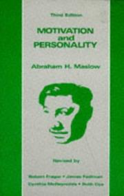

Motivation and Personality
Book·Abraham Maslow, 1954·动机与人格

The original source of Maslow's ideas on needs and self-actualization. The book does not contain the famous pyramid.
- Author
- Abraham Maslow
- Year
- 1954
- Difficulty
- Intermediate
- Kind
- Primary text
- Schools
- Hierarchy of Needs and Self-Actualization
- Core theories
- Self-Actualization Theory, Hierarchy of Needs
Editions
- Chinese edition 《动机与人格（第三版）》 [美]亚伯拉罕•马斯洛 · tr. 许金声 等 · 中国人民大学出版社 · 2013 Douban 8.9 (447 ratings) Douban page ↗
- English edition Motivation and Personality Abraham H. Maslow · Third edition (rev. Robert Frager et al.), Harper & Row · 1987 Open Library ↗